Triangle
A triangle is a simple closed curve made of three line segments. It has three vertices, three sides and three angles.
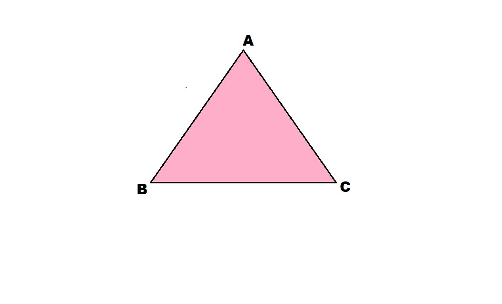
Here is ΔABC.
Sides = AB, BC, CA
Angles = ∠BAC, ∠ABC, ∠BCA
Vertices = A, B, C
The side opposite to the vertex A = BC
The side opposite to the vertex C = AB
The side opposite to the vertex B = AC
MEDIANS OF A TRIANGLE:
A triangle's vertex and the opposite side's midpoint are connected by a median.
The triangle's median is the line segment AD that connects the middle of BC to its opposing vertex, A.
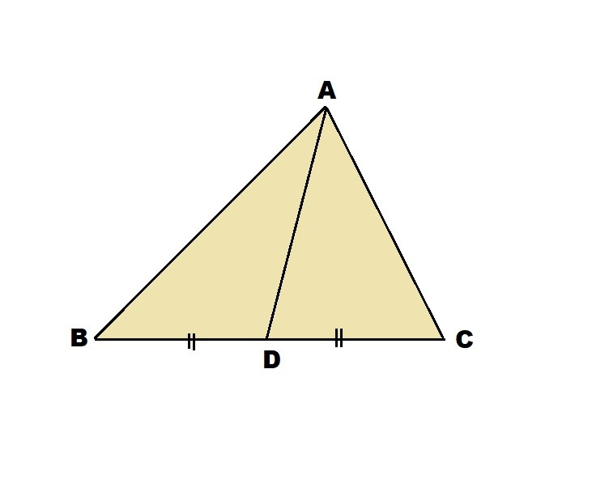
ALTITUDES OF A TRIANGLE:
One endpoint of an altitude is located at the triangle's vertex, while the other endpoint is on the line that contains the opposite side. One can draw an altitude across each vertex.
The height is given by the line segment that starts from A, comes straight down to BC, and is perpendicular to BC. The triangle's altitude is represented by this line segment AE.
PC perpendicular on line AB and QB perpendicular on line AC.
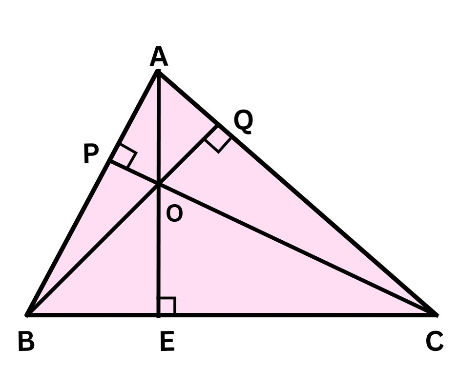
Types of Triangles
There are two general categories into which triangles can be divided:
- Triangles with respect to side lengths
- Triangles based on their interior angles
Types of Triangles Based on Sides
The triangles are divided into the following types based on side lengths:
- Equilateral Triangle: All of the side lengths of an equilateral triangle are equal. All of the side lengths of an equilateral triangle are equal. Each interior angle in this case will be 60 degrees in measure. Equilateral triangles are also called equiangular triangles because they have equal angles. An equilateral triangle is depicted in the illustration below. 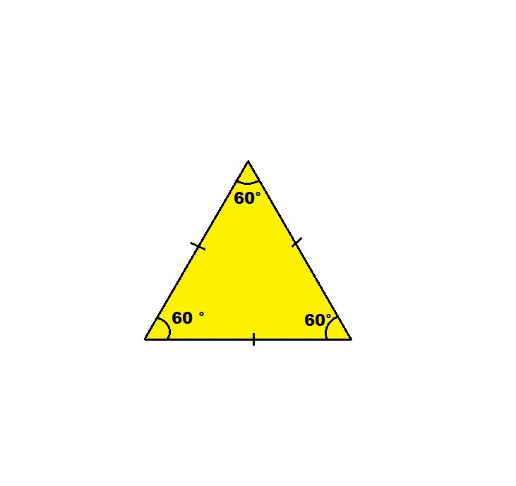
- Isosceles triangle: The lengths of two of the three sides in an isosceles triangle are equal. So, the angles opposite the equal sides are equal to each other. To put it another way, the two sides and two angles of an isosceles triangle are equal. An example of an isosceles triangle is shown in the figure below. 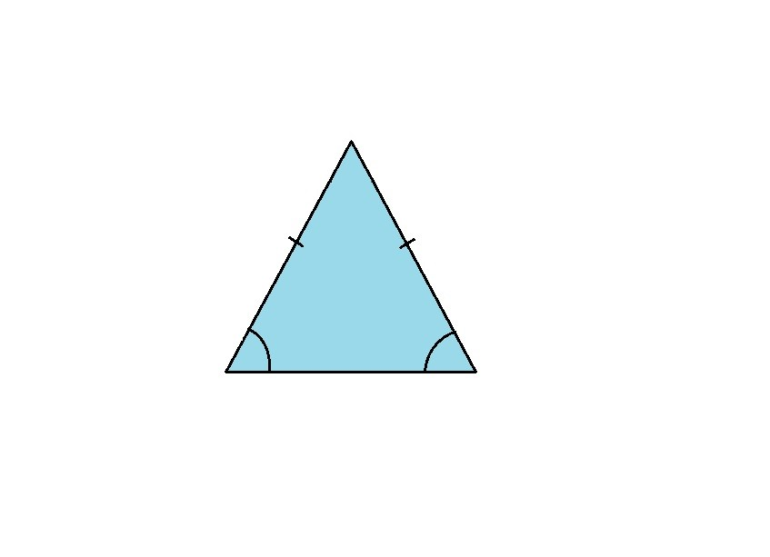
- Scalene triangle: It has side lengths of various measurements. In such a triangle, no two sides will be the same length. In a scalene triangle, all interior angles are different. The figure below depicts a scalene triangle. You can see that none of the sides are equal in length. 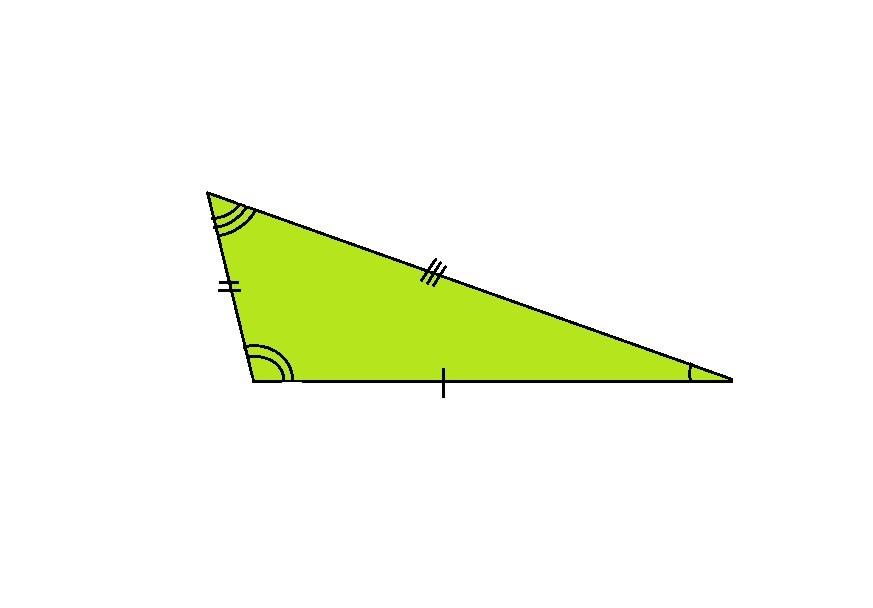
Types of Triangles Based on Angles
Triangles are categorised into the following various types according to their angles:
- Acute Triangle: An acute triangle is one in which all three interior angles are acute. An acute-angled triangle is one with all internal angles smaller than 90 degrees. The figure below depicts an acute triangle. 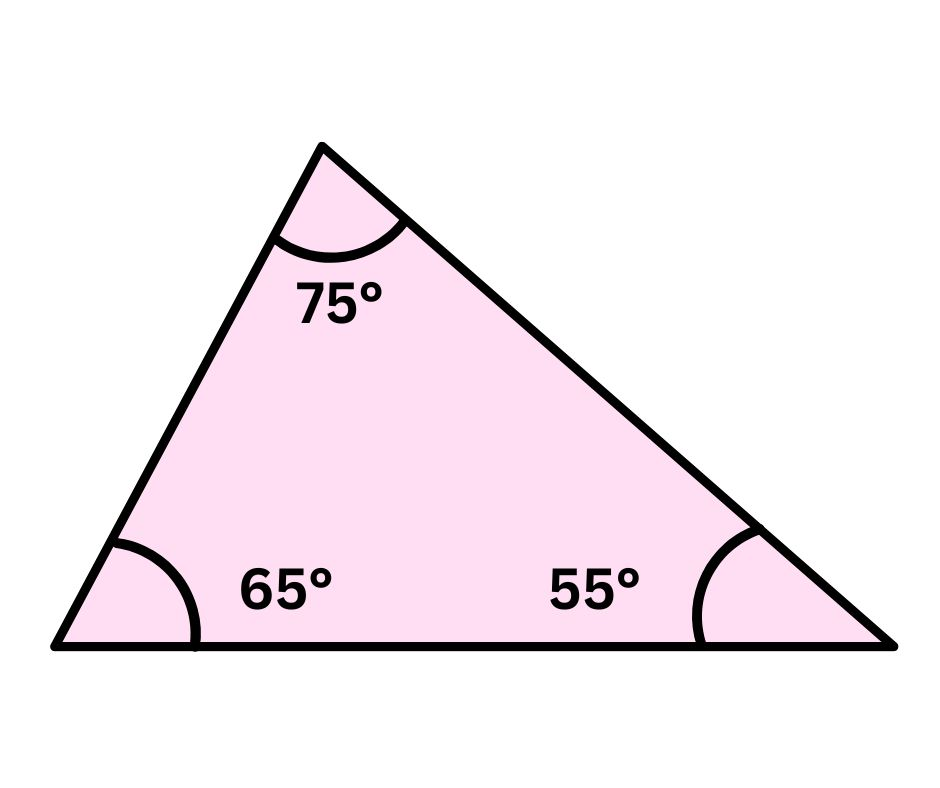
- Right Triangle: A right triangle is a triangle with one of its angles at 90 degrees. In a right-angled triangle, the hypotenuse is the longest side that is opposite the right angle (90 degrees). You may come across triangle types with combined names, such as right isosceles triangles, however this merely means that the triangle has two equal sides and one of the internal angles is 90 degrees. The figure below depicts a right triangle. 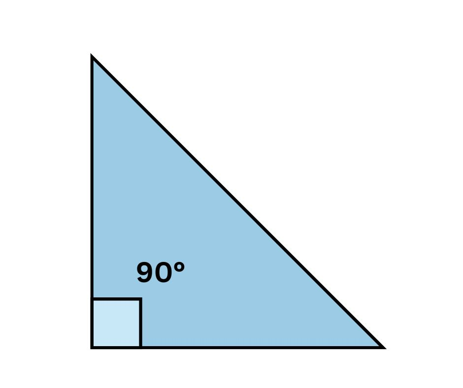
- Obtuse Triangle: Obtuse triangles are ones with one of the three interior angles measuring more than 90 degrees. In other terms, an obtuse angled triangle is one in which one of the angles is obtuse. The figure below depicts an obtuse triangle. 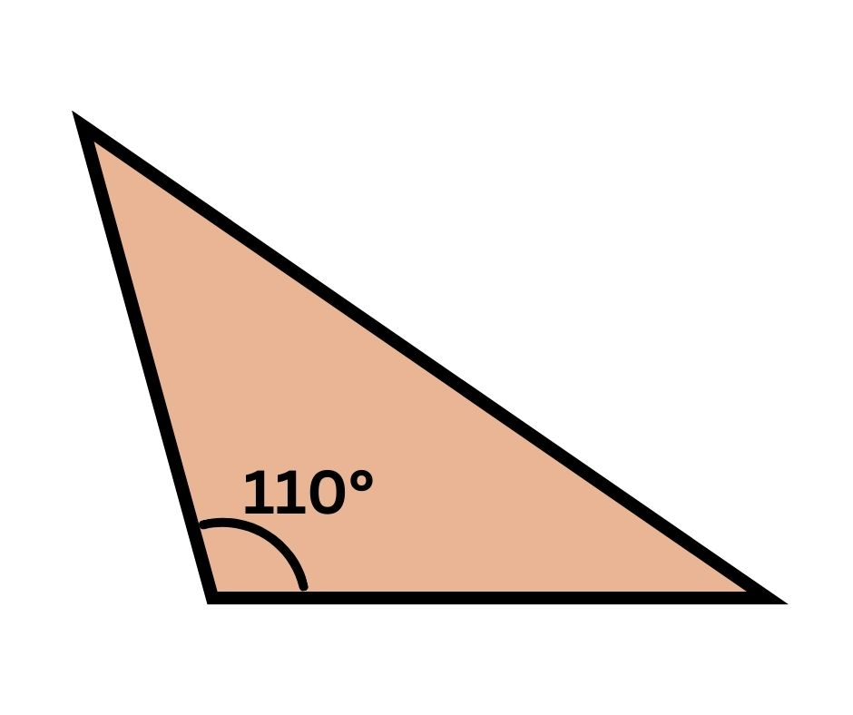
Points to remember:
Here are a few points to consider while studying various types of triangles:
- In an equilateral triangle, each of the three internal angles is 60°.
- The three interior angles of a triangle always sum up to 180°
- All triangles have two acute angles.
Triangle and its Properties
The properties of a triangle help us to identify relationships between different sides and angles of a triangle. Some of the important properties of a triangle are listed below.
Angle Sum Property
As per the angle sum property, the sum of the three interior angles of a triangle is always 180°.
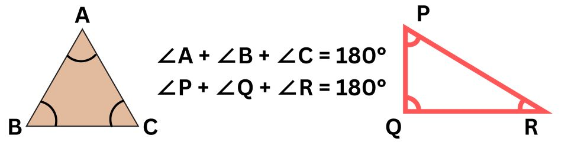
In the given triangles, ∠A + ∠B + ∠C = 180° and ∠P + ∠Q + ∠R = 180°
Triangle Inequality Property
As per the triangle inequality property the sum of the length of the two sides of a triangle is greater than the third side. 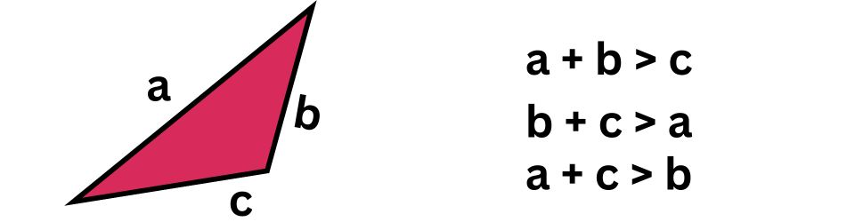 Observe the figure given above which shows △ABC which represents the Triangle inequality property. If a = 4 units, b = 6 units, and c = 3 units, let us verify the triangle inequality property as follows:
- a + b > c ( 4 + 6 > 3)
- c + a > b (3 + 4 > 6)
- c + b > a (3 + 6 > 4)
Side Opposite the Greater Angle is the Longest Side
In order to understand this property which says that the side opposite the greater angle is the longest side, observe the triangle given below. In this triangle, ∠B is the greatest angle. Thus, the side AC is the longest side. 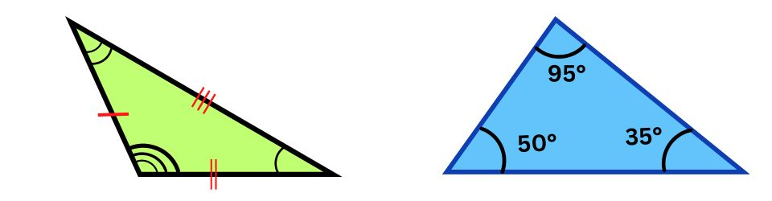
Exterior Angle Property
As per the exterior angle property, the exterior angle of a triangle is always equal to the sum of the interior opposite angles. In the given triangle, ∠e = ∠a + ∠b
It should be noted that 3 exterior angles can be extended in a triangle and all these exterior angles add up to 360°.